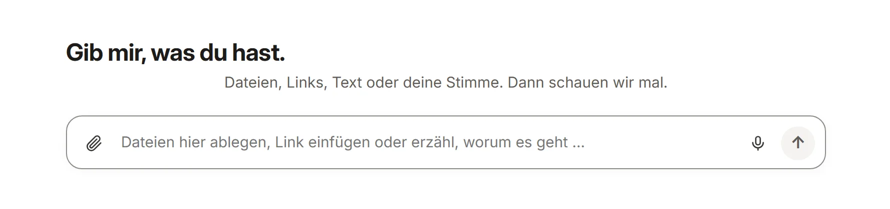
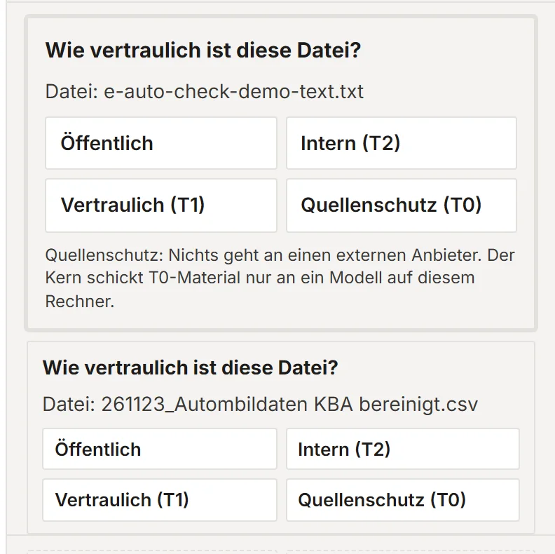
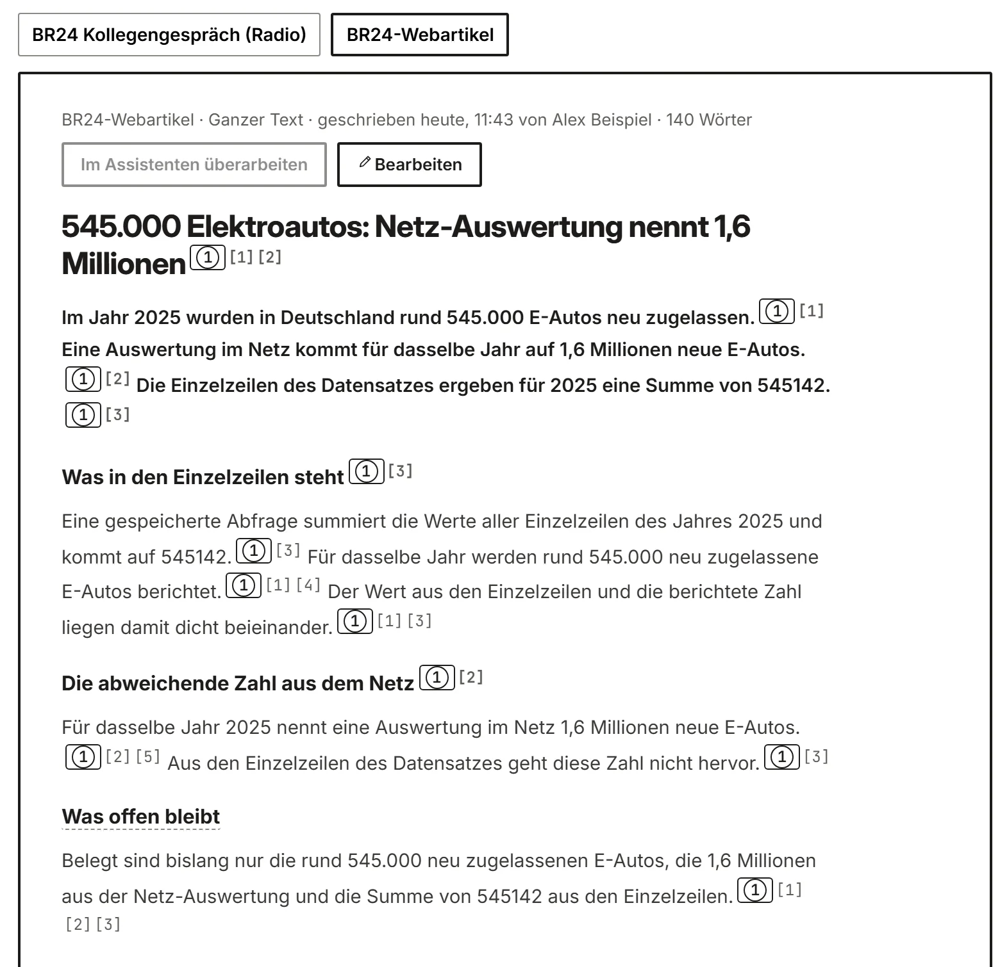

The five steps
A project in Open Journalist is one story, or one investigation that may become several. Its sidebar always shows the same steps. The interface is available in English and German; the screenshots here show the German one, with the German labels in parentheses.
| Step | What you do | What the machine does |
|---|---|---|
| 1 Start | Hand over material, say what it is about | Stores every file unchanged, with its hash |
| 2 Explore (Explorieren) | Set how confidential each file is, ask questions, choose a thesis | Analyzes tables locally, proposes theses with their evidence |
| 3 Check (Prüfen) | Confirm or discard each claim, mark a thesis as checked | Finds claims in the material and checks them against data and sources |
| 4 Build (Bauen) | Choose formats, edit and accept the draft | Drafts the story in each format, every sentence with its claims |
| 5 Release (Freigeben) | Decide the quality gates, export | Blocks the export until the required gates are decided |
On the right of every step sits the assistant. You can ask it about your material at any time; it knows which step you are in and what is on screen. Below the steps you see your theses, and at the very bottom an activity bar shows what is running in the background.
Whatever the agent produces is a proposal, drawn with a dashed frame, until you confirm it. Nothing is sent to a model before you have said yes, and nothing is published by Open Journalist at all.
1 Start: “Give me what you have.”
Create a project on the Projects page with New project. A title is enough. The project opens with one field: drop files into it, paste links, type a sentence about what you are after, or press the microphone and speak. Speech is transcribed on your computer when the local speech model is installed.

Open Journalist takes text files and Markdown, Word, ODT, RTF and PDF; tables as CSV, TSV, Excel and ODS; images, where text recognition can run after your approval; audio and video; and web pages behind links. Every original is kept byte for byte.
2 Explore: understand the material
Say how confidential each file is
Before anything is read, the assistant asks for each file: How confidential is this file? Your choice is the approval to open it, recorded with your name and the time.

- public
- Public material. May go to any configured model and to the web search.
- T2
- Internal. Goes only to endpoints you allowed for internal material.
- T1
- Confidential. Goes only to endpoints you allowed for confidential material.
- T0
- Source protection. Never leaves your computer; only a local model may see it.
Hover over a button to see which model the file may then go to.
Let the data speak
Three actions sit at the bottom of the assistant. Data analysis (Datenanalyse) and Show anomalies (Auffälliges zeigen) run on your computer without a model: totals per year, the course over time as charts, outliers, strong changes, and, importantly, rows that are subtotals or grand totals and would be counted twice. Each result is a box in the middle, and each figure has its stored query.

Ask, and find theses
Type a question into the assistant, for example How many electric cars were registered in January 2025? Before the first request, one line names the model, the endpoint and exactly what would be sent, for example the question, the text of an approved document and only the column names of a table. Answer Yes to send it. Figures in the answer come from queries the app runs, not from the model's text.
Find theses (Thesen finden) asks the model for up to three theses from your approved material, each with the material that carries it. Choose one with Choose (Auswählen), discard the others, or write your own. Check stays locked until a thesis is chosen.

3 Check: what holds?
For each chosen thesis, press Search the material for claims (Aussagen im Material suchen). The verification agent splits the approved texts into atomic claims, one fact per claim, each anchored to its verbatim quote and line. A claim whose quote cannot be found in the original is discarded, not guessed.
Each claim gets a finding:
- supported
- Evidence in the data or in another approved source.
- contradicted
- The evidence says otherwise. Shown struck through, with a heavier frame.
- no evidence
- A gap. Nothing in the material speaks to it, and it stays visible.
Open Evidence (Belege) to see the quote, the stored query and its result side by side. For a figure, Open Journalist also shows what a naive sum over every row would give, which is how double counting comes to light.

Then decide: Confirm (Bestätigen) or Discard (Verwerfen) each claim. For public claims, Check on the web (Im Web prüfen) runs a search you see before it is sent and rates every source it finds. When you are done, Mark as checked (Als geprüft markieren) and continue with Finish the check and write the article.
4 Build: one story, several formats
Build shows your story: the checked theses with their confirmed claims, figures and passages. Choose one or more formats and what the machine should write:
- Full text
- The machine writes the text, you revise it.
- Outline
- Only subheadings and points with their evidence; you write the text yourself.
- Research dossier
- A pitch to an editor: what the research shows and what the piece could look like.
Every sentence of a draft carries markers for the claims it rests on. Sentences whose evidence did not hold are dropped, and the draft tells you how many and why. Edit the text directly, mark a passage to have the assistant revise it, or copy it as Markdown.

5 Release: people sign off
Release shows the story as it will leave, with its list of sources, each with file, line, quote and SHA-256 hash. On the right is the release checklist. Two gates are required for every story:
- G03 Source and evidence check, typically decided by the reporter.
- G14 Sign-off and release, typically decided by the editor on duty.
Press Decide (Entscheiden), set the outcome, keep or change the role, add a note and save. The decision is stored with your name, role and time, and refers to a fingerprint of the story: if the story changes afterwards, the decision no longer counts. Further gates, such as legal review or a request for comment, can be switched on per story.

Once the required gates are decided, the export unlocks: Markdown or an HTML page with a list of sources, a Word file, or a draft exchange file for a content management system. Files are written to the data folder of the project. Publishing stays in your target system.
Worked example: “E-Auto-Check”
The demo case ships with the source code. It is a synthetic short text with three claims about new registrations of electric cars, plus a table of new registrations by month, segment and model, 2013 to October 2026. The text is marked as synthetic in its first line; the figure 545,000 in it is computed from the table.
- Start with the demo. Run
start.bat --demoon Windows or./start.sh --demoon macOS. To keep it apart from your own projects, setOPENJOURNALIST_DATA_DIRto an empty folder first. The project “E-Auto-Check (Demo)” opens in Explore with both files waiting for a class. - Classify. Mark both files as public. The text shows its eight lines; line 5 says 545,000, line 6 says 1.6 million, line 7 claims that charging points have doubled.
- Analyze. Open the table and press Data analysis, then Show anomalies. The first finding: the sum over all rows for 2025 would be 8,555,794, almost three times the 2,857,591 of the grand-total rows, because subtotals and totals are rows too. The figures for 2025: 545,142 electric cars, +43.2 % over 2024.
- Ask. Try Where does the figure 545,000 in line 5 come from? The answer names the stored query and its value.
- Find theses. Expect one thesis on the double counting, one on the record year and one on the charging points. Theses differ from run to run. Choose the one on the 1.6 million.
- Check. Search the claims. The 545,000 are supported by the stored query (545,142 from the 12 grand-total rows). The 1.6 million are contradicted: the same query over every row, including 156 subtotal and 12 grand-total rows, gives 1,631,168. The charging points stay a gap: there is no material about them. Confirm both claims and mark the thesis as checked.
- Build. Choose the web article and the radio two-way. Every sentence cites the claims it rests on; the charging points get no invented source.
- Release. Decide G03 and G14 with a short note each. The export to Markdown and HTML unlocks.
Model steps take from under a minute to a few minutes each, depending on your endpoint. The local steps take seconds.
Example: your own format template
A format is a Markdown file with a short header and plain instructions: tone, structure, length. Open Journalist puts it in front of the writer's own instructions; it decides tone, language and length, and it never relaxes the rule that every sentence needs its evidence. Edit the built-in templates or add your own under Settings → Editorial → Format templates. A saved template with the same id replaces the built-in one.
A fictional example for a local newsletter:
---
id: newsletter-local
name: Local newsletter item
channel: Newsletter
spoken: false
---
# Tone
Plain and friendly, written for neighbors, not experts.
Short sentences. Explain every figure in one half-sentence.
# Structure
1. **Headline:** at most eight words, no question.
2. **What happened:** two sentences.
3. **Why it matters here:** two to three sentences.
4. **What is still open:** one sentence per gap.
# Length
120 to 180 words.The built-in templates (web article, radio two-way, TV piece, long-form feature) are examples, not house rules of any newsroom. Replace them with yours.
Story recipes and skills
Editorial knowledge lives in Markdown files too. A story recipe describes what a kind of investigation must clear: the questions for the interview at the start, the criteria for a story, the checks. Three draft recipes come with the prototype: find anomalies, test a hypothesis and the two-source principle. Every project has one recipe, which you can change at any time; the choice is recorded.
Each step also has a phase skill that tells the agent how to work in that step, and a system prompt with journalistic standards goes in front of every request. You can read and edit all of them in Settings. Your own skills are used only after a person has approved their exact content, and a skill can never relax a quality gate.
Settings at a glance
| Rubric | What you set there |
|---|---|
| Profile | Your name and role, used for approvals and decisions |
| Models | Endpoints, model names, keys, allowed sensitivity classes, connection test |
| Privacy | Where material of each class goes, and every refused request |
| Web search | The search service for web checks of public claims |
| News sources | Sources connected over the Model Context Protocol |
| Language and audio | Language of the interface; speech model for voice input, local or through an API |
| Editorial | System prompt, skills, story recipes and format templates |
| Info | Version, platform and log files |
Questions
Does the model calculate my figures?
No. For tables, the model may write a query; the app checks that it only reads, runs it locally and shows query and result. A figure the model writes itself is marked as unchecked.
What leaves my computer?
Only what you approve, only to endpoints that are allowed to receive its class, and the line before each request says what goes where. Source-protected material (T0) never goes to an online service. There is no telemetry.
Can I use it without a model?
Partly. Collecting, classifying, previews, the table analysis and anomalies run locally. Theses, claims and drafts need a model.
Which models work?
Any endpoint with an OpenAI-compatible chat API, preferably with tool calling, run by your organization, a provider you choose, or locally. The quality of theses and drafts depends on the model.